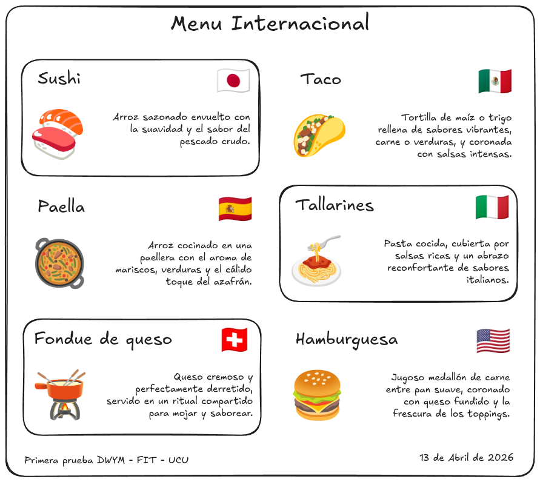

Se pide sustituir el HTML de esta página con una implementación del diseño de la figura.
Las imágenes se consiguen con emojis:
- Comidas: 🍣, 🌮, 🥘, 🍝, 🫕 y 🍔.
- Banderas: 🇯🇵, 🇲🇽, 🇪🇸, 🇮🇹, 🇨🇭 y 🇺🇸.
Los textos de las comidas son:
- Sushi: Arroz sazonado envuelto con la suavidad y el sabor del pescado crudo.
- Tacos: Tortilla de maíz o trigo rellena de sabores vibrantes, carne o verduras, y coronada con salsas intensas.
- Paella: Arroz cocinado en una paellera con el aroma de mariscos, verduras y el cálido toque del azafrán.
- Spaghetti: Pasta cocida, cubierta por salsas ricas y un abrazo reconfortante de sabores italianos.
- Fondue de queso: Queso cremoso y perfectamente derretido, servido en un ritual compartido para mojar y saborear.
- Hamburguesa: Jugoso medallón de carne entre pan suave, coronado con queso fundido y la frescura de los toppings.
La página debe ser responsiva, es decir que si se modifican las dimensiones de la ventana del navegador, el contenido se ajustará automáticamente para mantener una apariencia lo más similar posible al diseño dado.